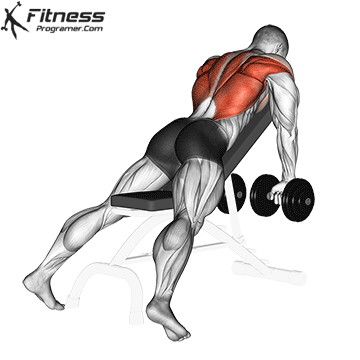
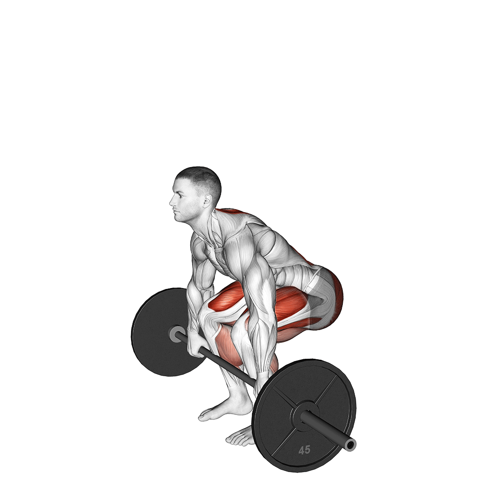

Hátizom gyakorlatok

|
LehúzásFogd meg a rudat olyan széles fogással, hogy a lehúzáskor az alkarod függőleges pozícióban legyen. Húzd le a rudat a könyöködre koncentrálva - ez segít, hogy kikapcsold a bicepszedet a munkából amennyire lehet. |
|
|---|---|---|
Evezés KábelenRögzítsd a lábadat a készüléken, majd húzd a fogantyút a tested középső része felé, vízszintes irányban. Maradj ebben a helyzetben egy másodpercig, majd engedd a karodat lassan kiegyenesedni, amíg a széles hátizmok meg nem nyúlnak teljesen. Húzd be a fogantyút újból, és ismételd a mozdulatot. A karok kinyúlásakor próbálj meg arra törekedni, hogy a hátizom is megnyúljon, ne csak a karodat nyújtsd ki. |

|
|
|  |
Evezés Ferde PadonÁllítsd a fekpadot 45 fokos dőlésszögre, fogj meg egy pár kézi súlyzót. Feküdj a padra előrefele, a mellkasodnak érintkeznie kell a paddal. A lábaidat nyújtsd ki hátra, a tartásod legyen stabil, nyomd a földet úgy, hogy csak a lábfejed érintkezik a talajjal. Lógasd le a súlyzókat, egymás felé mutató tenyérrel. A fejed ne szegd a padnak, tartsd semleges pozícióban. A hátad erejével (próbáld kikapcsolni a bicepszeid munkáját) és a könyökeid hátrafele mozgatásával húzd fel a két kézi súlyzót addig, amíg csak tudod, és a felső holtponton feszíts rá a hátizmaidra, a lapockáidat zárd össze. Innen lassan engedd vissza a súlyzókat a kiinduló pozícióba. |
|
FelhúzásA felhúzás rúddal végzendő gyakorlat minden esetben. Állj úgy, hogy lábszárcsont éppen érintse a súlyzót. Hajolj előre természetesen, és ragadd meg a rudat az egyik kezedet előre-, a másik kezedet hátrafordítva (a fogóerő növelésére). Egyenesedj ki, természetesen használva lábad és hátad együttes erejét. Az emelés kezdetétől tartsd a rudat a testedhez a lehető legközelebb. Elképzelhető hogy a rúd felhorzsolja a bokádat. Vedd fel a súlyt a padlóról, a hátadat végig egyenesen tartva. Nagyon fontos, hogy a hát semmiképpen nem szabad, hogy domború legyen, ez egyenes út a porckorongsérvhez! Végig tartsd egyenesen, vagy kissé homorúan a hátadat, és egy pillanatra se felejtsd el ezt a pozíciót megtartani. A rudat a testedhez közel tartva emeld fel, ameddig a rúd a combodat nem érinti. Ez után lassan engedd vissza a kiinduló pozícióba. |
 | |
 |
T-Rudas EvezésRagadd meg a fogantyút, vagy rudat, és egyenesedj fel vele kb 45 fokos szögig a törzseddel. Húzd a hasadhoz a rudat/fogantyút, majd amikor a rúdra pakolt tárcsák megérintik a hasadat, engedd lassan vissza a kar nyújtott pozíciójáig a súlyokat. Ügyelj rá, hogy ekkor a hátizom is megnyúljon, ne csak a karodat nyújtsd ki. Ezzel a gyakorlattal rendkívül jó izomérzet érhető el, ha nem érzed a hátadat a gyakorlatok közben, mindenképpen érdemes tenni vele egy próbát. |
|